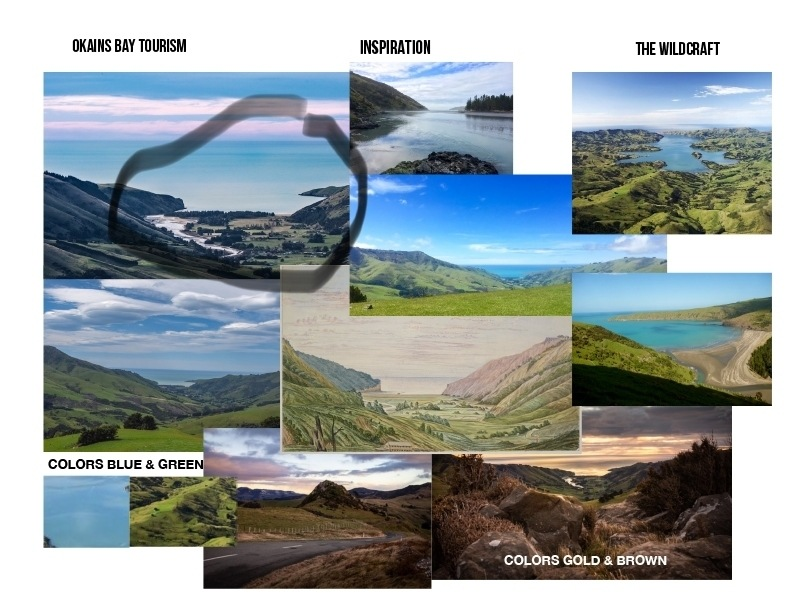
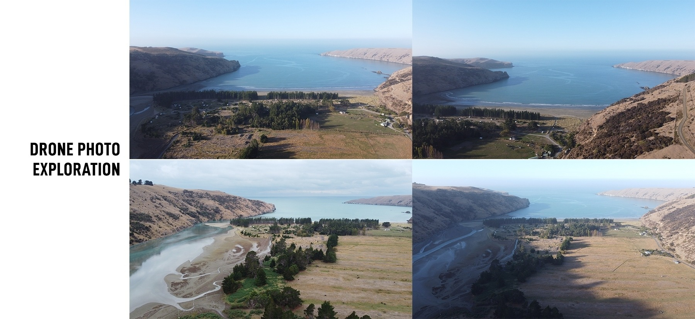
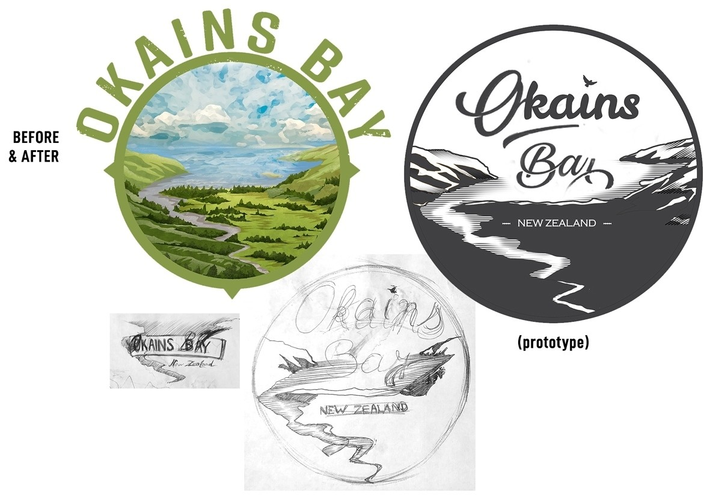
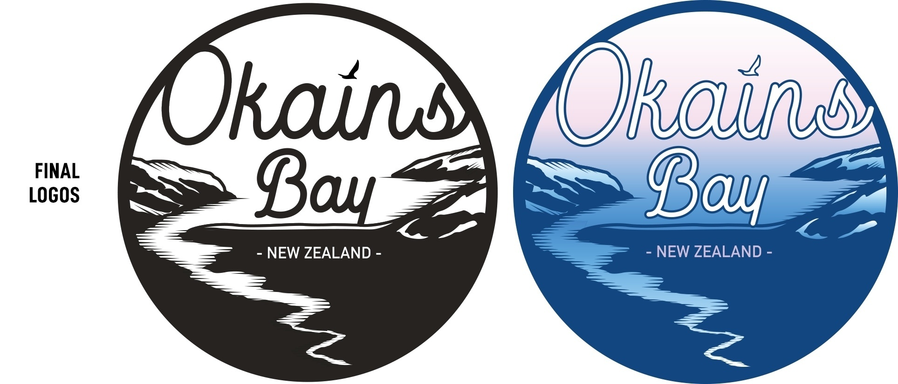

Logo
Okains bay logo design






Logo redesign of a place called Okains Bay in the Banks Peninsula, New Zealand, owned by a charitable trust. The logo had to stay "old-school" but be more readable and enjoyable. I used my Mavic Mini drone to fly over the place, which helped me focus on what's important and after a few drawings, I was able to define a simplified monochrome version of the logo. I had to start from scratch again as I didn't get the source files of the previous logo.
Created for: Okains Bay Charity Trust
Completed: 2021.
Skills: Logotype, Drone, Adobe Illustrator